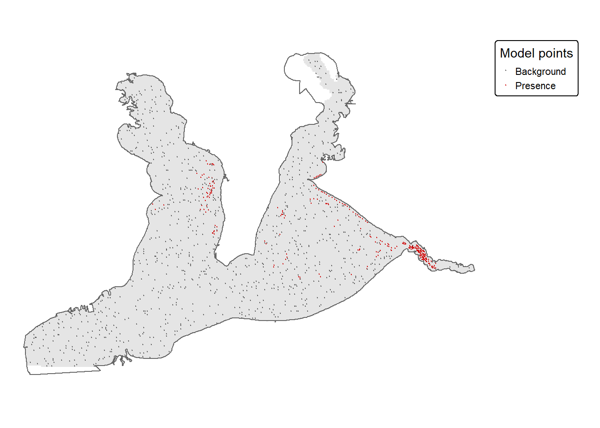

Warning: package 'dplyr' was built under R version 4.4.2
Attaching package: 'dplyr'
The following objects are masked from 'package:stats':
filter, lag
The following objects are masked from 'package:base':
intersect, setdiff, setequal, union
library(sf)
Warning: package 'sf' was built under R version 4.4.2
Linking to GEOS 3.12.2, GDAL 3.9.3, PROJ 9.4.1; sf_use_s2() is TRUE
library(terra)
Warning: package 'terra' was built under R version 4.4.3
terra 1.9.1
library(tmap)
Warning: package 'tmap' was built under R version 4.4.3
source(here::here("3-scripts", "1-functions.r"))
Warning: package 'tidyverse' was built under R version 4.4.3
Warning: package 'ggplot2' was built under R version 4.4.3
Warning: package 'tibble' was built under R version 4.4.3
Warning: package 'tidyr' was built under R version 4.4.2
Warning: package 'readr' was built under R version 4.4.2
Warning: package 'purrr' was built under R version 4.4.3
Warning: package 'stringr' was built under R version 4.4.2
Warning: package 'forcats' was built under R version 4.4.2
Warning: package 'lubridate' was built under R version 4.4.3
-- Attaching core tidyverse packages ------------------------ tidyverse 2.0.0 --
v forcats 1.0.0 v readr 2.1.5
v ggplot2 4.0.2 v stringr 1.5.1
v lubridate 1.9.4 v tibble 3.3.0
v purrr 1.1.0 v tidyr 1.3.1
-- Conflicts ------------------------------------------ tidyverse_conflicts() --
x tidyr::extract() masks terra::extract()
x dplyr::filter() masks stats::filter()
x dplyr::lag() masks stats::lag()
i Use the conflicted package (<http://conflicted.r-lib.org/>) to force all conflicts to become errors
The predictors are depth (m), dissolved oxygen (mg/L), salinity (ppt), sediment class, turbidity (NTU), and water temperature (°C). All six share the same 100 m grid. The model uses cells with values for all six predictors.
predictor_files <-c(Depth ="rast_depth.tif","Dissolved Oxygen"="rast_do.tif",Salinity ="rast_sal.tif",Sediment ="rast_sed.tif",Turbidity ="rast_turb.tif","Water Temperature"="rast_wTemp.tif")predictors <- terra::rast(file.path(raster_directory, predictor_files))names(predictors) <-names(predictor_files)valid_layers <- terra::app(is.finite(predictors), "sum")complete_mask <- terra::ifel(valid_layers == terra::nlyr(predictors), 1, NA)# Preserve the full CRS when converting to a RasterStack for dismo.model_stack <- terra::mask(predictors, complete_mask) %>% raster::stack()raster::crs(model_stack) <- terra::crs(predictors)
Presence and background points
Keep one oyster occurrence per complete predictor cell. Sample 1,000 background points from other complete cells.
Of the 443 oyster records, 442 had complete predictor values. After retaining one occurrence per cell, the model used 254 presence points and 1000 background points.
The visual variable `col` of the layer "raster" contains a unique value.
Therefore a discrete scale is applied (tm_scale_discrete).

Figure 1: Eastern oyster presence and background points used in the MaxEnt model.
Spatial cross-validation
Assign 5 km spatial blocks to five folds. Hold out one fold at a time and use AUC to measure how well the model ranks held-out presences relative to background points. Omission is the proportion of held-out presences below the 10th percentile of the training presence scores.